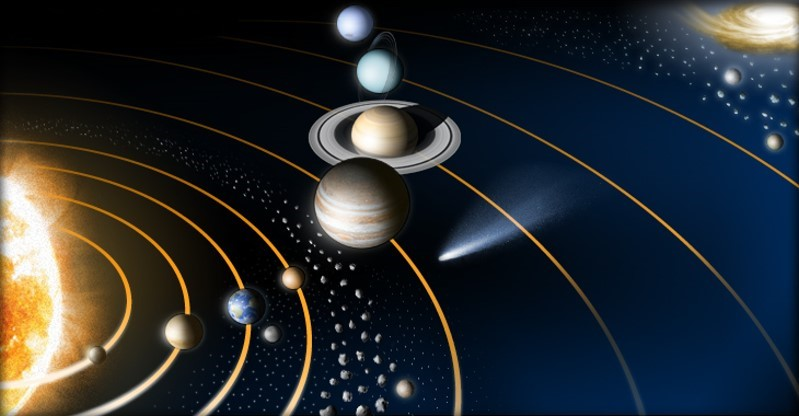

Mercure
Vénus
Terre
Mars
Jupiter
Saturne

Uranus

Neptune

Le système solaire est un système planétaire composé de divers éléments :
Ainsi la famille du Soleil est très variée : planètes rocheuses, planètes gazeuses, satellites, astéroïdes et comètes.
Le système solaire fait partie de la Voie lactée. Il est situé dans le bras d'Orion. Il se trouve proche de la périphérie à environ 28 000 années-lumière du centre galactique, et à 50 années-lumière du plan équatorial. Il fait le tour de la Galaxie en 250 millions d'années. Le système solaire aurait donc effectué entre 20 et 21 révolutions galactiques depuis sa formation voici 4,55 milliards d'années. En même temps, il oscille de part et d'autre du plan galactique avec une période de 66 millions d'années. Il traverse ce plan tous les 33 millions d'années.
Mercure |
Vénus |
Terre |
Mars |
|---|---|---|---|
Jupiter |
Saturne |
Uranus |
Neptune |